![Keretes tervlap, felül 1–6 oszlopszám és oszlopcím. 1. oszlop főkör: L1, L2, L3 – Q1 főkapcsoló – F3 zárlatvédelem – K1 főérintkezők (mellettük /3) – F1 hőkioldó 14,5 A – X1:U1, V1, W1 – M1 7,5 kW, 400 V Δ, 14,5 A motor, PE. 2. oszlop: L1-ről F2 C 2 A vezérlőkör-védelem, kimenete az 1-es potenciálsín. 3. oszlop: F1 95–96 (/1), 2-es vezeték, S0 11–12 STOP, 3-as vezeték, S1 13–14 START, 4-es vezeték, K1 A1–A2 tekercs, N. 4. oszlop: K1 13–14 (/3) az S1-gyel párhuzamosan. 5. oszlop: K1 23–24 (/3), 5-ös vezeték, H1 ÜZEM. 6. oszlop: F1 97–98 (/1), 6-os vezeték, H2 ZAVAR. Az N sín alatt a K1 tükre: 1–2, 3–4, 5–6 az 1. oszlopban, 13–14 a 4., 23–24 az 5. oszlopban, 31–32 tartalék; az F1 tükre: fűtőelemek az 1., 95–96 a 3., 97–98 a 6. oszlopban. Jobb alul feliratmező: VL-00, 1/1, A változat.](figures/img/ve047-3.png)
Statikus változat (mint a PDF-ben)
A kapcsolódó elmélet: tankönyv, 13.3 alfejezet.
Az alábbi kapcsolási rajz egy háromfázisú motor direktindítását mutatja önfenntartással. Először a főáramkört, majd a vezérlőáramkört rajzoljuk meg.
A főáramkör a háromfázisú hálózat L1, L2, L3 fázisáról indul, fázisonként külön ágban. A fázisvezetőkben Q1 hárompólusú megszakító, K1 mágneskapcsoló három főérintkezője és F1 hőkioldó található. A motor M1 háromfázisú aszinkron motor, tekercsei csillag vagy delta kapcsolásban lehetnek; a rajzjel a kapcsolást nem részletezi, azt a kapocsléc kötése mutatja.
Az ábra leírása: a három fázis (L1, L2, L3) külön kapocsról indul, és mindegyik ágban sorosan a Q1 hárompólusú megszakító egy pólusa, a K1 mágneskapcsoló egy főérintkezője és az F1 hőkioldó egy fűtőeleme következik; a három ág a motor U1, V1, W1 kapcsára fut, a motor fém testét a zöld-sárga PE védővezető köti a védőföldeléshez. A HTML-változatban a Start/Stop gombokkal a K1 behúzása és az áramút is követhető.
A vezérlőáramkör L1 és N között van, az F2 vezérlőbiztosító (vagy kismegszakító) után. Az F1 hőkioldó NC érintkezője, az S0 stop nyomógomb, az S1 start nyomógomb, a K1 tekercs és az N sín alkotja a fő ágat. A K1 önfenntartó segédérintkezője párhuzamosan van az S1-gyel. A H1 üzemjelző lámpa egy K1 segédérintkezővel sorban, párhuzamosan a tekercs körrel.
Az ábra leírása: az áramút felülről (L1) lefelé (N) olvasandó: F2 vezérlőbiztosító → F1 95-96 bontó → S0 Stop (bontó) → S1 Start (záró), vele párhuzamosan a K1 13-14 öntartó érintkező → K1 A1-A2 tekercs → N. A jobb oldali ágban a K1 23-24 záró segédérintkező és a H1 üzemjelző lámpa az F1 utáni ponttól az N-ig, a tekerccsel párhuzamosan kapcsolódik.
Működés ellenőrzése. Ha megnyomjuk az S1-et, az L1 fázis árama az F1–S0–S1–K1 tekercs–N útvonalon folyik. A K1 behúz, és a K1 13–14 önfenntartó érintkező zár. Az S1 elengedése után az áram az önfenntartó érintkezőn keresztül folyik tovább, így a tekercs behúzva marad. Az S0 megnyomásával a kör megszakad. Túlterhelésnél az F1 NC kinyit, és a kör szintén megszakad. A H1 lámpa a K1 23–24 érintkezőn keresztül párhuzamosan kap táplálást, tehát akkor világít, ha a mágneskapcsoló behúzott.
A fenti két rajzot az ipari gyakorlatban egy tervlapra rajzolják, és a lapot úgy szerkesztik, hogy bármelyik érintkezőről megtaláld a hozzá tartozó tekercset. Az alábbi egyszerűsített tanulólap ugyanezt a direktindítást mutatja a könyv egységes jeleivel (Q1 főkapcsoló, F3 főköri zárlatvédelem, K1 mágneskapcsoló, F1 hőkioldó, F2 vezérlőkör-védelem, S0 STOP, S1 START, H1 üzem-, H2 zavarjelző, M1 motor; a vezérlőtáp itt egyszerűsítve L1–N 230 V).
Így olvasd a lapot:
Jelútkövetés a lapon. Az S1 (3. oszlop) megnyomásakor az 1 → 2 → 3 → 4 potenciálon át kap feszültséget a K1 tekercs; a tükörből látod, hogy behúzáskor az 1. oszlop főérintkezői zárnak (a motor indul), a 4. oszlop 13–14-e öntart, az 5. oszlop 23–24-e bekapcsolja a H1-et. Túlterheléskor az F1 fűtőeleme (1. oszlop) működteti a 3. oszlop 95–96 bontóját (a K1 elenged) és a 6. oszlop 97–98 záróját (a H2 világít). A HTML-változatban a Start/Stop és az F1-teszt gombbal ezt végig is játszhatod; egy érintkezőre kattintva kiemelődik a tekercse és a tükör sora.
Szabály. Egy készülék a lapon mindenhol ugyanazzal a betűjellel szerepel, akárhány oszlopba kerülnek is a részei; a tükörben minden érintkezője szerepel, a fel nem használt is (tartalékként).
A valós szekrényben a lap teljesebb: betáp-sorkapocs, motorvédő kapcsoló vagy biztosító + hőkioldó, vezérlőtranszformátor (F4, T1, F2), kezelődoboz (X2) és motorkábel (W1) is rajta van. Ezt a teljes lapot a Direktindítás, önfenntartás és kezelőszervek (tankönyv, 32.1) alfejezet (32.1) „teljes kapcsolási lap” ábrája (VL-01) mutatja, a szerelését a Vezérlések építése: direkt, reverzáló, Y-Δ (tankönyv, 41.2) alfejezet.
A munkahelyen a kapcsolási rajz, a sorkapocsterv és az anyaglista rendszerint villamos tervezőprogramból (CAD) készül, és a kiviteli rajzot a szerelő módosításai alapján is ott vezetik át. Az általános rajzprogramhoz képest a villamos CAD szabványos jelkönyvtárat ad, automatikusan készíti a kereszthivatkozást és az érintkezőtükröt, számozza a vezetékeket és a potenciálokat, és a rajzból állítja elő a sorkapocstervet, az anyag- és a kábellistát. A projekt több lapból áll, és a készülék egyetlen adatbázis-objektum: a K1 tekercse és érintkezői több lapon is ugyanahhoz az objektumhoz tartoznak. Ilyen program például az ingyenes, nyílt forráskódú QElectroTech (oktatásra alkalmas) és az iparban elterjedt, fizetős EPLAN Electric P8; az alábbi lépések a szemléletet mutatják, a menüpontok és a funkciónevek verziófüggők (ellenőrizendő: a program aktuális dokumentációja).
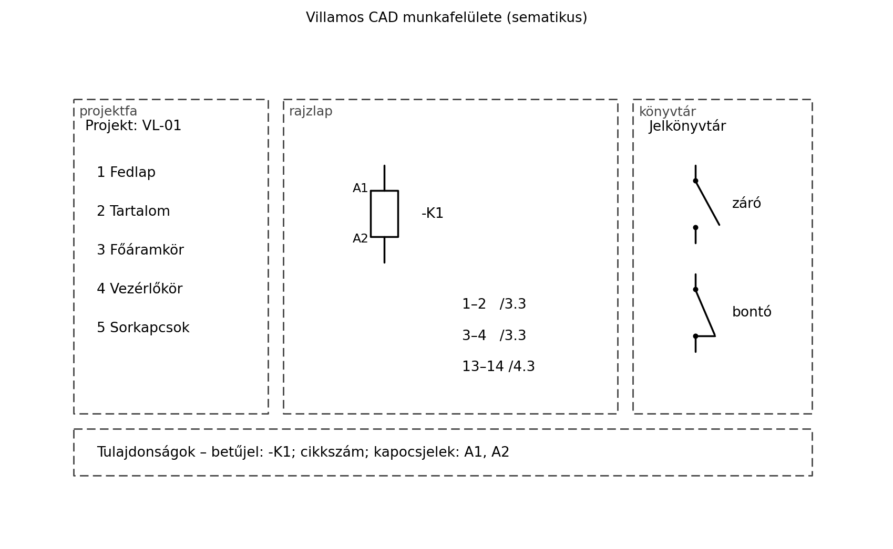
Biztonsági korlát. Ez irodai, rajzolási feladat; meglévő berendezés felméréséhez a szekrényt csak jogosult személy, feszültségmentesítés után nyithatja meg.
Lépések (a direktindítás fenti tervlapjának megrajzolásához):
Ellenőrzési pontok: minden érintkező mellett van visszahivatkozás; nincs „árva” érintkező (tekercs nélküli K-jel); a sorkapocsterv egyezik a rajzzal; a lapok számozása folytonos.
Tipikus hibák: a jelet vonalakból rajzolják meg könyvtárelem helyett (nincs kereszthivatkozás); két különböző készülék kapja a K1 jelet; a vezeték csak „hozzáér” a kapocshoz, de nincs bekötve, ezért a program nem ismeri fel a kapcsolatot (és a sorkapocsterv hiányos lesz).
Cél: Tanműhelyben, törpefeszültségű környezetben egy direktindítású motorvezérlés rajzának elkészítése és bekötése a kapcsolási rajz alapján.
Eszközök és anyagok: kapcsolási rajz, mágneskapcsoló, nyomógombok (NC és NO), hőkioldó, jelzőlámpa, kapocssínek, vezetékek, szerszámok, mérőműszer.
Biztonsági korlát. A feladat tanműhelyi (törpefeszültségű) környezetre vagy jogosult oktató felügyeletére vonatkozik; hálózati feszültségen önállóan ne végezd. A 230/400 V-os munkát csak jogosult, arra képesített személy végezheti.
Feszültségmentesítés öt szabálya (a bekötés megkezdése előtt mindig): 1. Kapcsold le a feszültséget. 2. Biztosítsd a visszakapcsolás ellen. 3. Ellenőrizd a feszültségmentességet (kétpólusú feszültségvizsgálóval). 4. Földelj és rövidre zárj. 5. Fedd le vagy kerítsd el a szomszédos feszültség alatti részeket.
Lépések:
Ellenőrzési pontok: - A start gomb megnyomásakor a tekercs behúz, és az önfenntartó érintkező fenntartja. - A stop gomb megnyomásakor a mágneskapcsoló elenged. - A hőkioldó tesztelésekor a vezérlőáramkör megszakad. - A jelzőlámpa csak behúzott állapotban világít.
Tipikus hibák: - Az önfenntartó érintkezőt sorba kötik a start gombbal: a tekercs a start megnyomására sem kap feszültséget (két nyitott NO sorban), a motor nem indul. - Az önfenntartó ág hiányzik vagy szakadt: a motor csak addig jár, amíg a start gombot nyomva tartják. - A stop gombot NO típusúra cserélik, így a leállítás nem működik. - A hőkioldó érintkezőt kihagyják, vagy rossz kapocspárra kötik. - A jelzőlámpát sorba kötik a tekerccsel, ezzel megváltoztatják a tekercs áramkörét.
Dokumentálás: a bekötés elvégzése után a rajzon jelölni kell a beépített készülékeket és a vezetékek számozását, és a jegyzőkönyvben fel kell tüntetni a feszültségmentességi ellenőrzés és a működési próbák eredményét.
Válaszok: 1. Hamis: a főáramkör a fogyasztó energiáját szállítja, a tekercs a vezérlőáramkörben van. 2. Soros sorrend: F1 NC → S0 NC → S1 NO → K1 tekercs; K1 13–14 önfenntartó párhuzamosan az S1-gyel; H1 lámpa K1 23–24-gyel sorosan, párhuzamosan a tekercs körrel. 3. A reteszelés megakadályozza, hogy egyszerre két irány mágneskapcsolója behúzzon; K1 NC érintkező a K2 tekercs körébe, és K2 NC a K1 tekercs körébe kerül. 4. 13–14 (NO). 5. A stop gombnak NC típusúnak kell lennie; ha NO, az áramkör alaphelyzetben szakadt, és a leállítás nem lehetséges. Az önfenntartót párhuzamosan kell kötni a start gombbal, nem sorosan.
1. feladat (A) Rajzold le egy jelzőlámpa nélküli direktindítású vezérlőáramkör kapcsolási rajzát: F1 NC, S0 NC, S1 NO, K1 tekercs, K1 önfenntartó NO. Jelöld a kapocsjelöléseket.
2. feladat (A) Sorold fel, milyen betűjeleket kapnak a következő készülékek: megszakító, mágneskapcsoló, hőkioldó, nyomógomb, jelzőlámpa.
3. feladat (B) Egy reverzáló vezérlésben a K1 tekercs sora így néz ki: F1 NC → S0 NC → S1 NO → K2 NC → K1 tekercs. Rajzold be a K1 önfenntartó érintkezőt, és írd le, miért szükséges itt a K2 NC.
4. feladat (B) Y–Δ indításnál sorold fel a három mágneskapcsoló (K1, K2, K3) funkcióját, és rajzold le a vezérlés blokkvázlatát az időrelével.
5. feladat (C) Adott az alábbi hibás vezérlőáramkör: L1 → F1 NC → S0 NC → S1 NO → K1 tekercs → N. Az önfenntartó érintkező (K1 13–14) sorba van kötve az S1-gyel. Mi a hiba, és mit tapasztalsz a start gomb megnyomásakor? Hogyan javítanád?
6. feladat (D) Tanműhelyi gyakorlatban mérőműszerrel ellenőrzöd a bekötött direktindítást. Feszültségmentes állapotban a vezérlőkör bemenő kapcsa (az F2 után) és az N kapocs között mérsz. Alaphelyzetben végtelen ellenállást, a start gomb megnyomásakor kb. 120 Ω-ot mérsz (a K1 tekercsének ellenállása). Jó-e?
7. feladat (B) Rajzold meg a reverzáló kapcsolás (13.3.4) funkcióábráját az S1 → S0 → S2 kezelési sorrendre. Sávok: S1, S2, S0, K1, K2, M1 előre, M1 hátra.
Minden feladat egy alapállapotban rajzolt, hibás kapcsolás. Kövesd a jelutat, mondd meg, mi történik az S1, az S0 (és ahol van, az S2) megnyomásakor, nevezd meg a hibát, és javítsd ki. A 8–16. rajzban egy, a 17.-ben két hiba van. Szintek: 8–10 (B), 11–14 (C), 15–17 (C/D). Ezek rajzolvasási feladatok: a hibás kapcsolást ne építsd meg.
8. feladat (B).
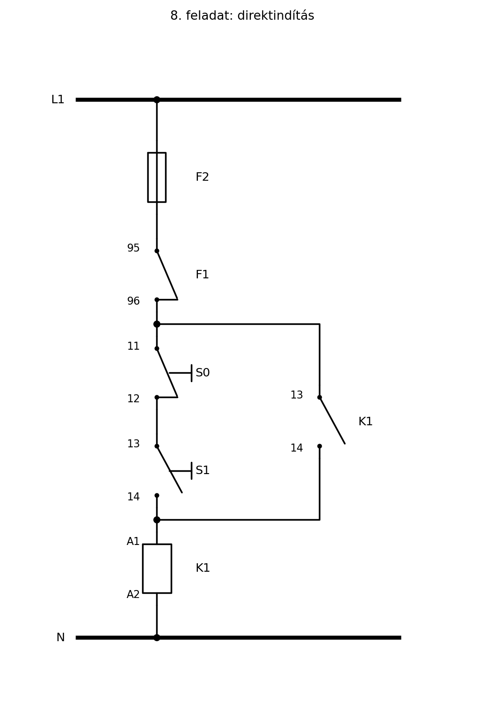
9. feladat (B).
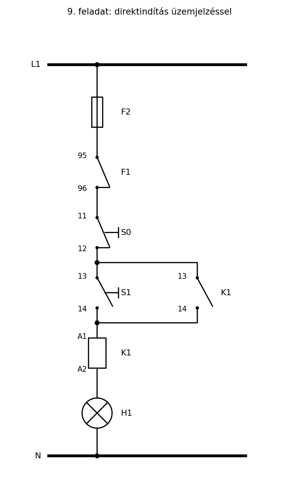
10. feladat (B).
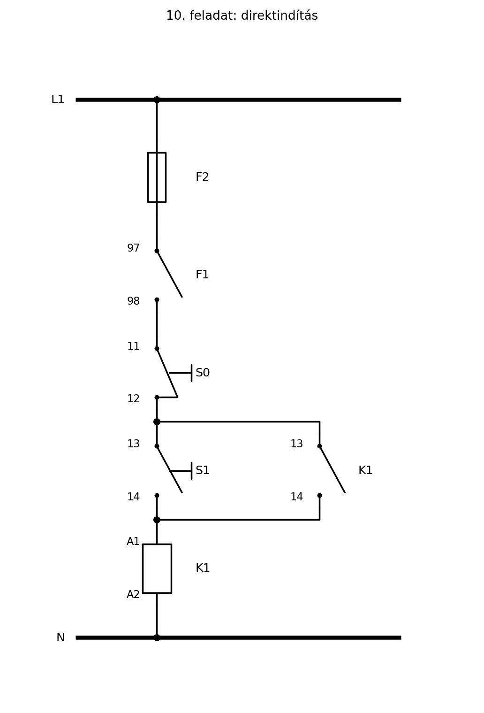
11. feladat (C).
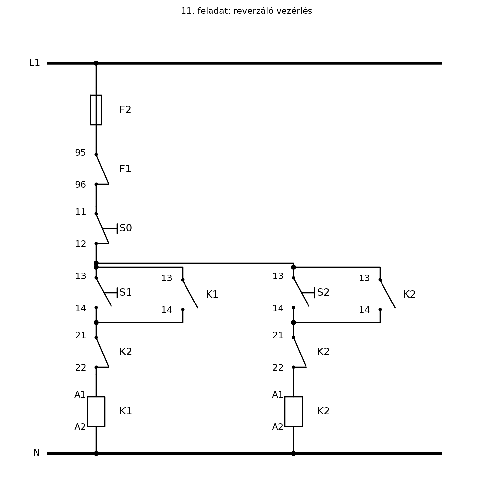
12. feladat (C).
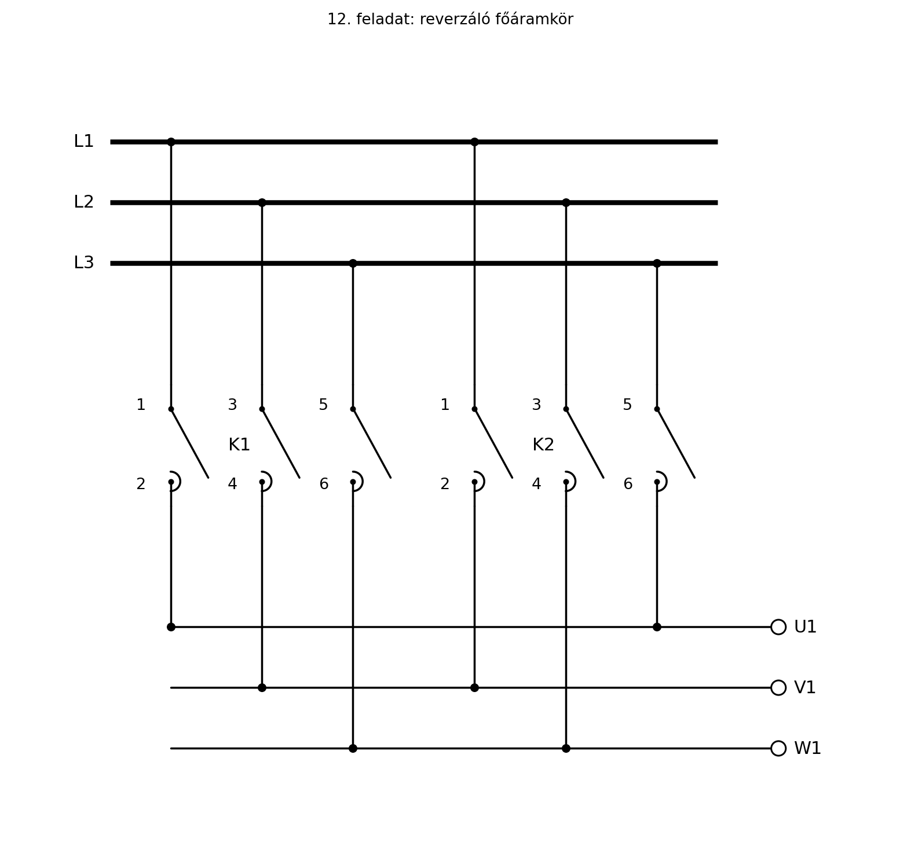
13. feladat (C).
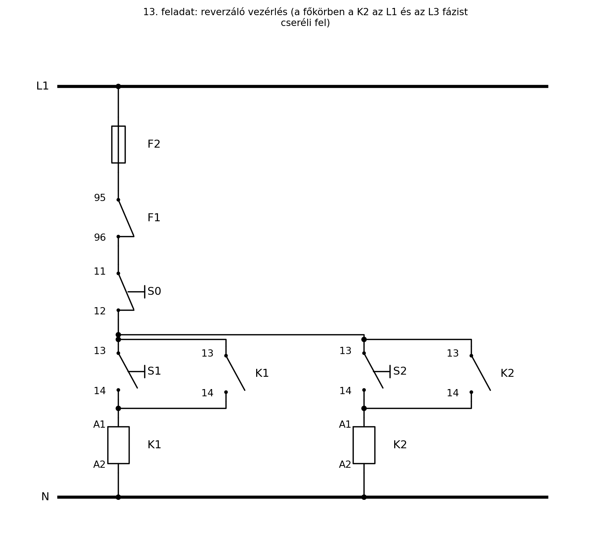
14. feladat (C).
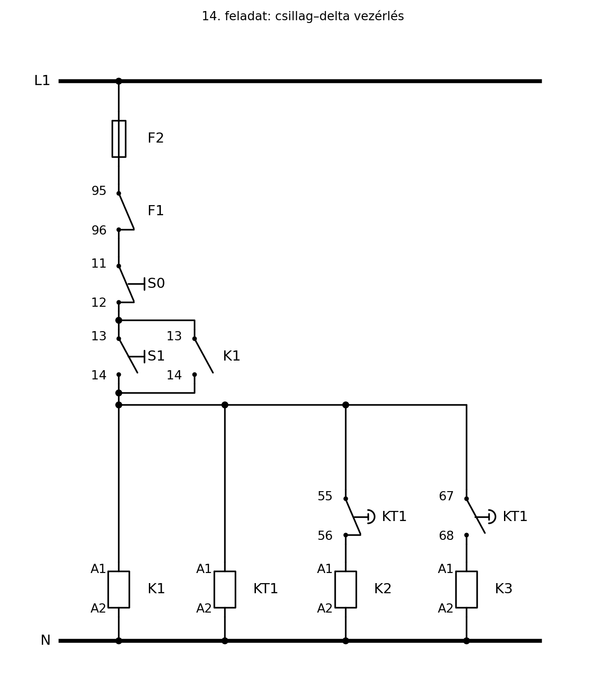
15. feladat (C).
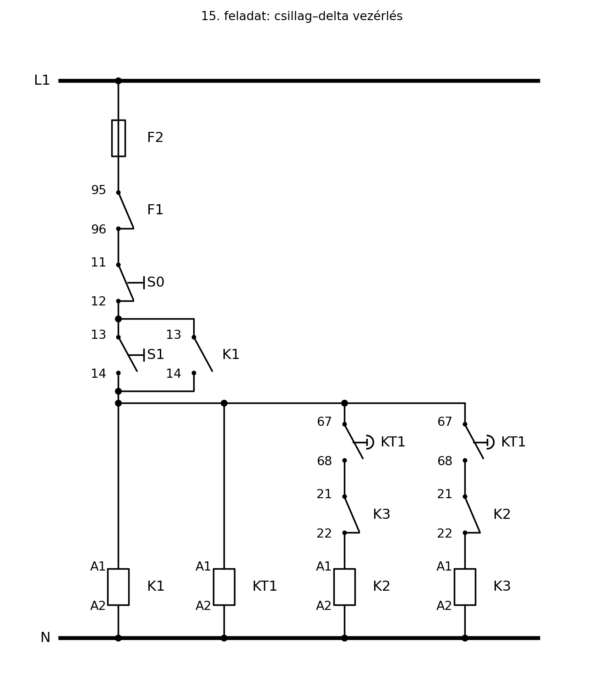
16. feladat (D).
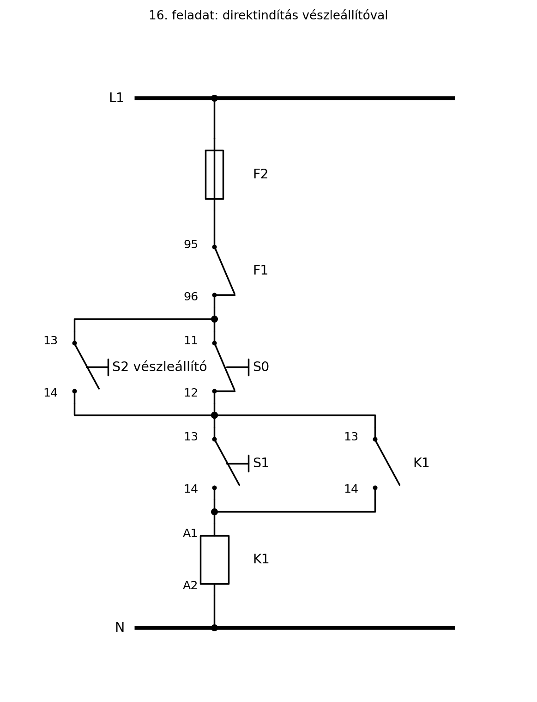
17. feladat (D).
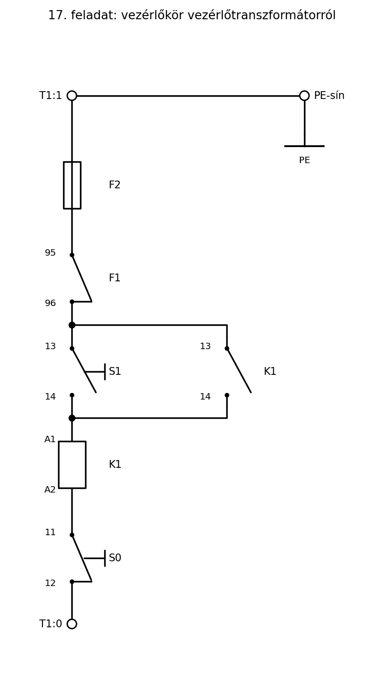
1. feladat megoldása. A kapcsolási rajz: L1 fázis sín → F1 95–96 → S0 11–12 (NC) → S1 13–14 (NO) → K1 tekercs A1, majd A2 → N sín. A K1 13–14 önfenntartó érintkező párhuzamosan az S1 13–14-gyel. A kapocsjelölések: F1: 95–96; S0: 11–12; S1: 13–14; K1 tekercs: A1–A2; önfenntartó: K1 13–14.
2. feladat megoldása. Megszakító: Q; mágneskapcsoló: K; hőkioldó: F; nyomógomb: S; jelzőlámpa: H.
3. feladat megoldása. A K1 önfenntartó érintkező párhuzamosan az S1-gyel. A K2 NC érintkező sorosan a K1 tekercs előtt van, ez a reteszelés: ha K2 behúzott, a K2 NC kinyit, így a K1 tekercse nem kap feszültséget, amíg K2 el nem enged. Ez megakadályozza a két irány egyidejű behúzását.
4. feladat megoldása. K1 = hálózati mágneskapcsoló: a hálózatot a motorra köti. K2 = csillag mágneskapcsoló: a tekercsek csillagpontját rövidre zárja. K3 = delta mágneskapcsoló: a motor tekercseit delta kapcsolásba köti. Vezérlőkör (L1-től N-ig): F2 → F1 95–96 → S0 → S1 ∥ K1 13–14 → K1 tekercs; ezzel párhuzamosan a KT1 időrelé tekercse (K1 13–14 után). K2 ág: KT1 15–16 késleltetve bontó érintkezője → K3 21–22 (retesz) → K2 tekercs. K3 ág: KT1 15–18 késleltetve záró érintkezője → K2 21–22 (retesz) → K3 tekercs. Indításkor K1, KT1 és K2 behúz (csillag); a beállított idő után a KT1 15–16 nyit (K2 elenged), a 15–18 zár, és a K2 21–22 visszazárása után a K3 behúz (delta). A pontos kapcsolást a Csillag–delta indítás vezérlése (tankönyv, 32.3) alfejezet részletezi.
5. feladat megoldása. A hiba: az önfenntartó érintkezőt sorba kötötték a start gombbal. Nyugalomban a 13–14 nyitott, ezért a start megnyomásakor is nyitott marad: a tekercs egyáltalán nem kap feszültséget, a motor nem indul (két nyitott NO érintkező sorban). Javítás: a K1 13–14 érintkezőt párhuzamosan kell kötni az S1 NO érintkezővel.
6. feladat megoldása. Jó. Alaphelyzetben a start gomb nyitott, a kör szakadt; megnyomva a műszer a K1 tekercs ellenállását látja (értékét a gyártói adatlap adja – ellenőrizendő). Az A1–A2 kapcsokon közvetlenül mérve mindig a tekercs ellenállása látszik, a start gombtól függetlenül: 0 Ω zárlatot (áthidalást, zárlatos tekercset), végtelen szakadást (stop, F1 95–96, vezeték vagy tekercs) jelentene. A K1 kézi benyomásával az önfenntartó ág is ellenőrizhető.
7. feladat megoldása. Sávleírás (magas = nyomva / behúzva / jár): S1 rövid impulzus t1-nél; K1 és „M1 előre” t1-től t2-ig magas (öntartás); S0 rövid impulzus t2-nél, ekkor K1 és „M1 előre” leesik; S2 rövid impulzus t3-nál (t3 > t2), K2 és „M1 hátra” t3-tól magas marad. A K1 és a K2 sávja sehol sem fed át, és a K2 csak a K1 leesése után emelkedhet (a K1 21–22 retesz miatt). A valóságban a motor t2 után kifut; az irányváltást (t3) célszerű a megállás után indítani.
8–17. feladat megoldókulcsa. A javítás mindig a rajzon történik; megépített kör hibáját csak feszültségmentesen javítjuk.
| Feladat | Tünet | Ok | Javítás |
|---|---|---|---|
| 8. | S1-re indul és öntart, az S0 hatástalan; csak az F1 (vagy a lekapcsolás) állítja le | a K1 13–14 az S0 és az S1 soros ágát hidalja át | a K1:13 az S0:12 – S1:13 csomópontra kerüljön |
| 9. | a K1 nem húz be biztosan, berreg; a H1 esetleg halványan világít | a H1 sorban van a tekerccsel, a feszültség megoszlik | a H1 külön ágba: K1 23–24 – H1 – N, a tekercs A2 közvetlenül az N-re |
| 10. | S1-re semmi sem történik | az F1 97–98 záró érintkezője van a 95–96 bontó helyén (a kör alaphelyzetben szakadt) | F1 95–96 a körbe; a 97–98 a zavarjelzésre |
| 11. | S1-re a K1 rendben behúz; S2-re a K2 berreg (behúz, elenged); álló K1 nélkül sem marad bent, és K1 üzeme alatt is meg-megrándul | a K2 ágban a saját 21–22 bontója van a K1-é helyett: önmegszakító kör, a retesz hiányzik | a K2 ágba K1 21–22 |
| 12. | a motor S1-re és S2-re ugyanabba az irányba forog | a K2 mindhárom fázist ciklikusan cseréli (L1–V1, L2–W1, L3–U1), a fázissorrend nem változik | a K2 csak két fázist cseréljen: L1–W1, L2–V1, L3–U1 |
| 13. | futó K1 mellett S2-re a K2 is behúz: zárlat az L1 és az L3 között, kioldás, összeégő érintkezők | hiányzik a reteszelés mindkét ágból | K2 21–22 a K1 tekercs elé, K1 21–22 a K2 elé; ajánlott mechanikus retesz és nyomógombos retesz is |
| 14. | indításkor rendben, átkapcsoláskor esetenként zárlat | a K2 (csillag) és a K3 (delta) között nincs kölcsönös retesz; a K3 behúzhat, mielőtt a K2 elengedett | K3 21–22 a K2 tekercs elé, K2 21–22 a K3 elé; átkapcsolási szünet |
| 15. | S1 után a K1 és a KT1 behúz, a motor nem indul; az idő leteltével a K2 és a K3 versenyez: vagy csillagban marad, vagy közvetlenül deltában indul | a K2 (csillag) ágban a késleltetve záró 67–68 van a késleltetve bontó 55–56 helyett | a K2 ágba KT1 55–56 |
| 16. | a vészleállító megnyomása nem állít le semmit; reteszelve az S0-t is hatástalanná teszi | záró érintkező, az S0-val párhuzamosan | kényszernyitású bontó érintkező, sorban az S0-val (a tényleges vészleállító kör a kockázatértékelés szerint; ellenőrizendő: MSZ EN ISO 13850, MSZ EN 60204-1) |
17. megoldás. Normál üzemben a kör látszólag jó (S1 indít, S0 leállít). 1. hiba: a védőföldelés a kapcsolóelemek felőli T1:1 pólusra került; helyette a T1:0 pólust kell a PE-re kötni. 2. hiba: az S0 a tekercs A2 és a T1:0 között van; helyette az F1 95–96 után, a nem földelt oldalon a helye, a K1:A2 pedig közvetlenül a T1:0-ra megy. Következmény a hibás rajzon: ha az S1 – K1:A1 vezeték földzárlatos, a tekercs a földön (T1:1) és az S0-n (T1:0) át feszültséget kap: a motor magától elindul, az F1 és az F2 nincs a hibaáramútban; csak az S0 állítja le. Ha a K1:A2 – S0 vezeték zárlatos a földdel, a szekunder az S0-n át rövidzárba kerül úgy, hogy az F2 nem szakítja meg.
Példa (gondolatkísérlet: földzárlat a vezérlőkörben).